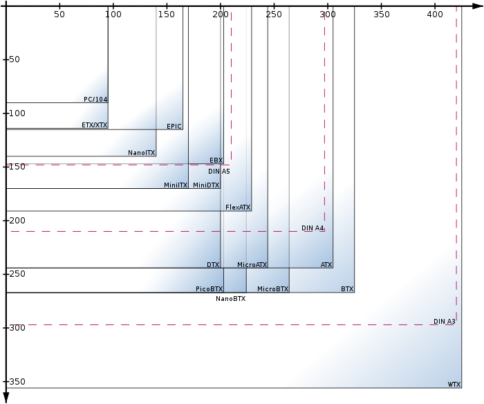
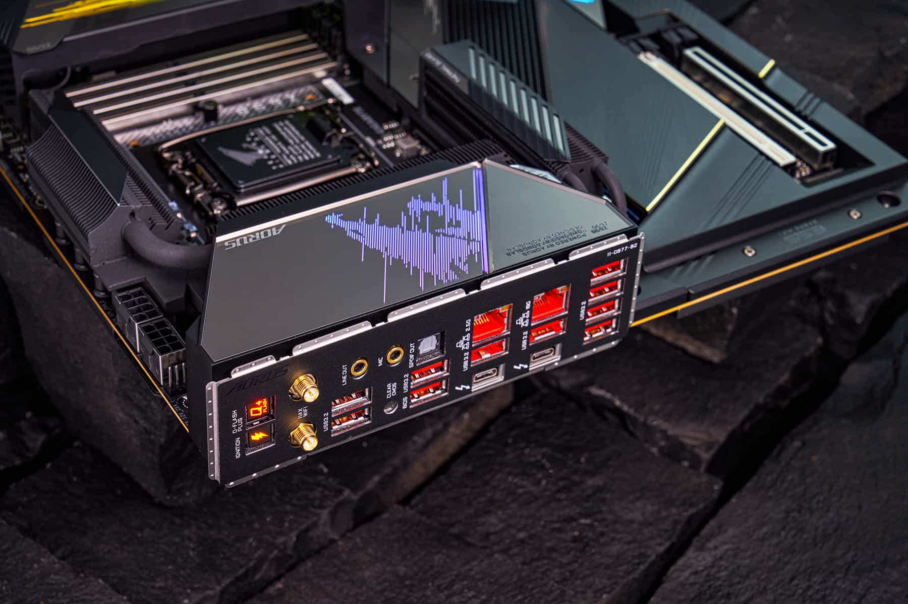

Základní deska (MOTHERBOARD)
Základní deska (anglicky mainboard či motherboard) představuje základní hardware většiny počítačů . Hlavním účelem základní desky je propojit jednotlivé součástky počítače do fungujícího celku a rozdělit jim elektrické napájení, které základní desce poskytne zdroj. Postupem času se funkce základní desky rozšiřovala v tom, že sama začínala obsahovat některé komponenty, které se dříve musely připojovat externě.
Typická základní deska umožňuje zapojení procesoru a operační paměti. Další komponenty (např. grafické karty, zvukové karty, pevné disky, mechaniky) se připojují pomocí rozšiřujících slotů nebo kabelů, které se zastrkávají do příslušných konektorů. Na základní desce je dále umístěna energeticky nezávislá paměť Flash, ve které je uložen systém BIOS, který slouží k oživení počítače hned po spuštění.
Form factor

- ATX – 305 × 244 mm - standard vytvořen firmou Intel v roce 1995. Dnes patří k nejpoužívanějším.
- microATX – zmenšená verze ATX. O 25 % kratší (244 × 244 mm). Obsahuje méně rozšiřujících slotů. Dnes patří k nejpoužívanějším zejména v kancelářských počítačích.
- E-ATX - prodloužená verze ATX (305 × 330 mm). Dnes zřídka používána v desktopovém High-endu.
- PC/XT – vytvořen firmou IBM. První deska pro domácí počítače.
- AT form factor (Advanced Technology) – vytvořen firmou IBM. Následovník PC/XT a předchůdce ATX.
- Baby AT – zmenšená varianta AT.
- ETX – používán v embedded počítačích.
- FlexATX
- LPX
- NLX – nízko profilová základní deska.
- BTX (Balanced Technology Extended) – vytvořen firmou Intel. Měl nahradit ATX. Lepší chlazení a napájení. Příliš se neujal.
- Mini-ITX – velmi malé. Malá rozšiřitelnost. Používá se převážně pro multimediální centra.
Teplota a spolehlivost
Základní desky jsou obvykle chlazené vzduchem pomocí chladičů, často namontovaných na větší čipy, jako je Northbridge, v moderních základních deskách. Nedostatečným nebo nesprávným chlazením (K nesprávnému chlazení může často dojít pokud je na základní desce naneseno velké množství prachu, které se tam dostane pomocí ventilace) může dojít k poškození vnitřních součástí počítače, nebo způsobit jeho pád. Pasivní chlazení nebo ventilátor, který je namontován na napájení je dostačující pro mnohé stolní počítače do roku 1990.
Novější desky mají integrovaná teplotní čidla pro detekci teploty základní desky a CPU a také kontrolovatelné konektory ventilátoru, které BIOS nebo operační systém může používat pro regulaci otáček ventilátoru. Některé počítače (které mají velmi výkonné mikroprocesory, velké množství paměti RAM a vysoce výkonné grafické karty) používají systém chlazení vodou, na rozdíl od běžných uživatelů. Základní desky používají elektrolytické kondenzátory pro filtraci stejnosměrného proudu. Nedostatečné chlazení a zvýšení teploty zhoršuje funkčnost základní desky.
Konektory

- Interní - nachází se na ploše základní desky a připojovaná zařízení obvykle uvnitř
počítačové skříně
- IDE
- SATA
- FLOPPY
- M.2
- napájecí konektory
- konektory pro připojení ventilátorů
- konektory zvukové karty
- rozšiřující konektory USB a FireWire
- konektory k připojení kabelů od předního krytu
- indikační LED diody (zapnuto, HDD)
- USB konektor
- eSATA konektor
- audio
- Externí - se nachází na zadním panelu základní desky
- USB
- PS/2
- FireWire
- eSATA
- COM
- VGA
- LAN
- HDMI
- konektory zvukové karty